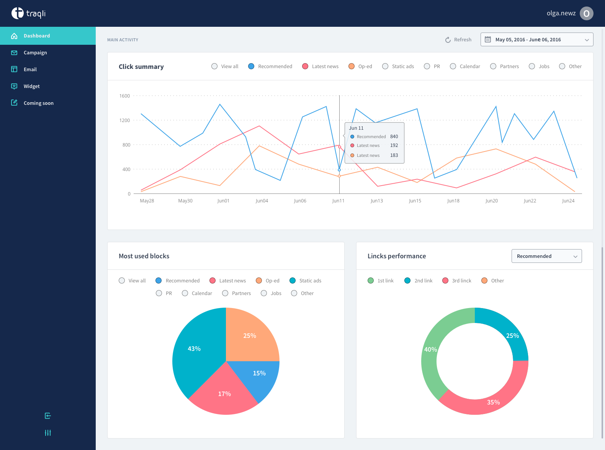
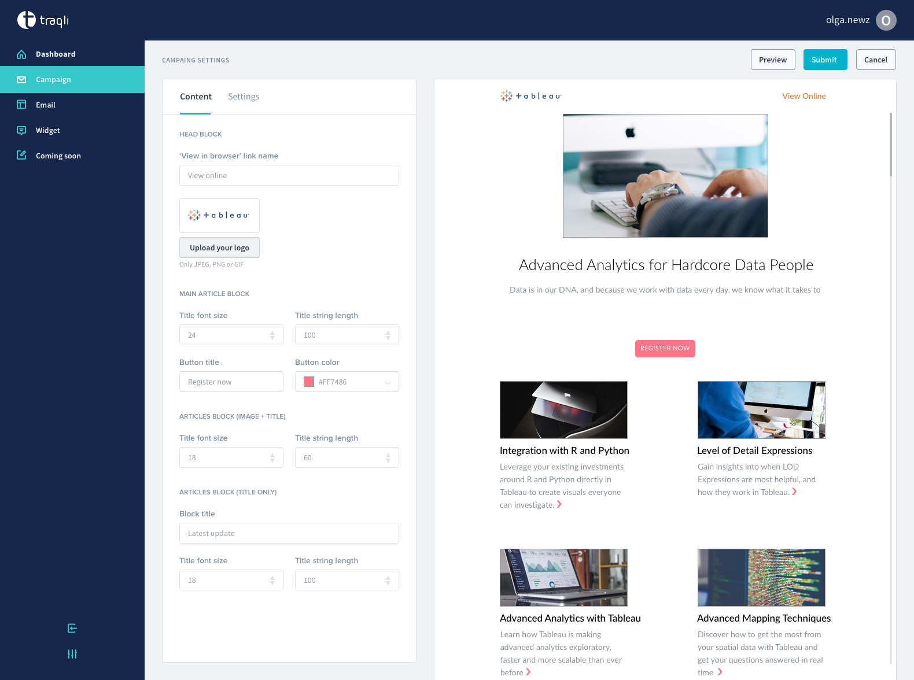
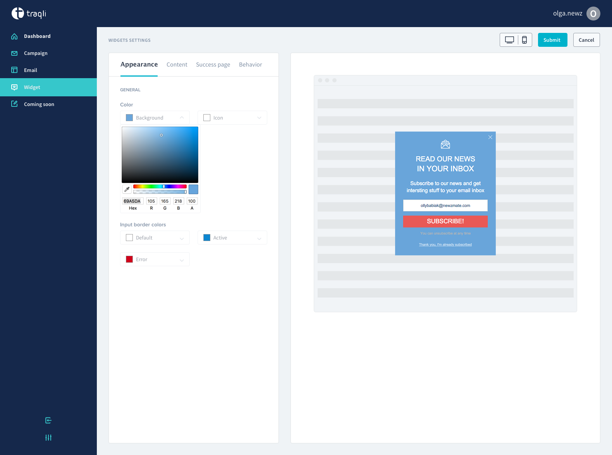
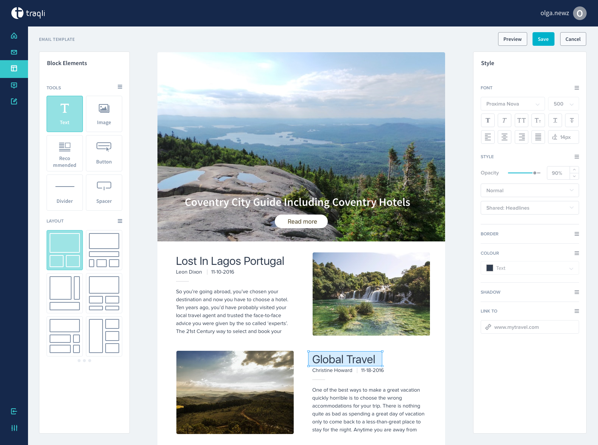
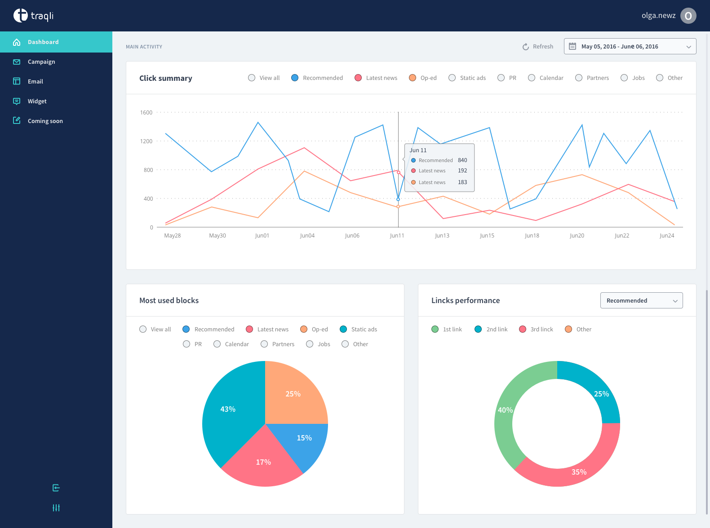
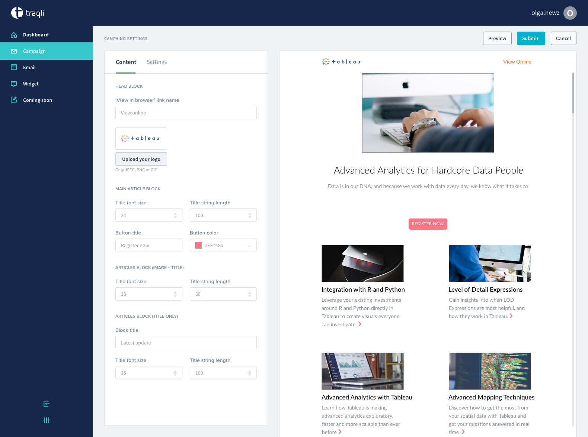
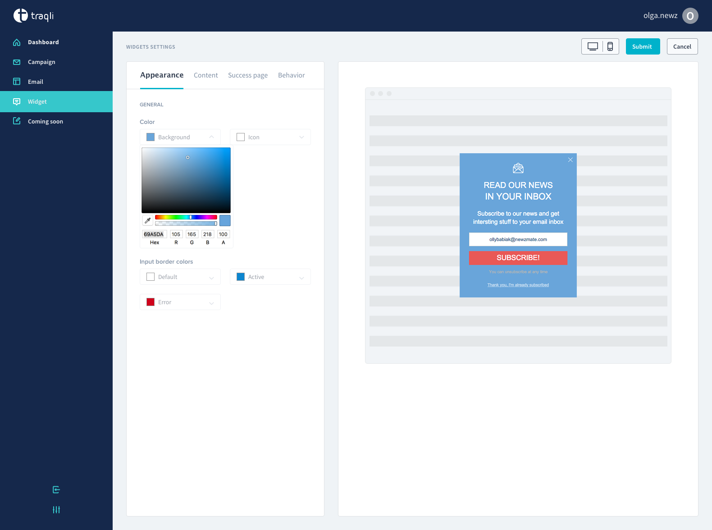
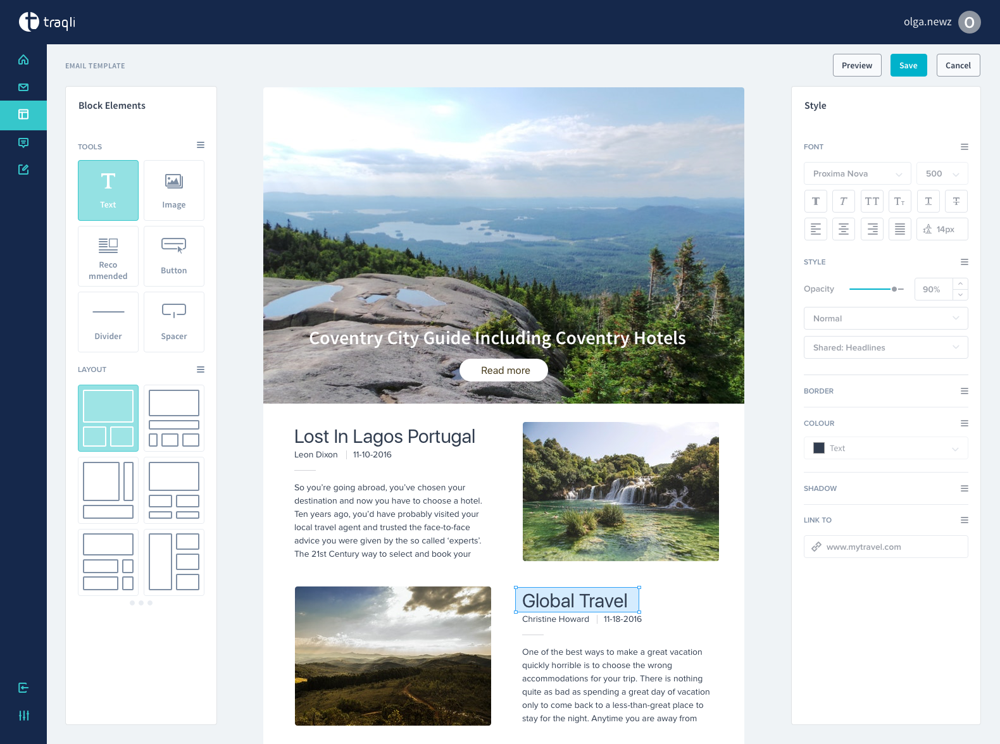

Dashboard for Traqli
Traqli - Audience capturing and engagement platform that utilizes personally touching emails based on user behavior analysis. In dashboard you can track the following statistics.
Goals and result: My goal was to create a “state-of-the-art” design that would reflect the nature of Traqli and bring freshness to the industry, while addressing the most important goals for email and onsite personalization. You can quickly adjust the number of recommendations and their layout, look & feel of each item, behavior, responsiveness and many more. As a result the recommendations block will be organically embedded into your website.
| Client: | Newzmate |
 






